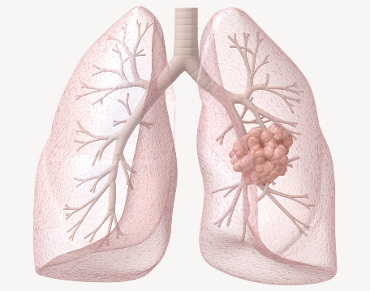
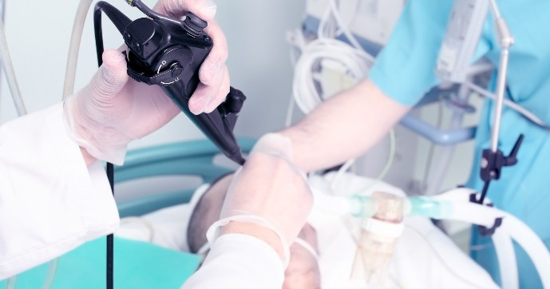
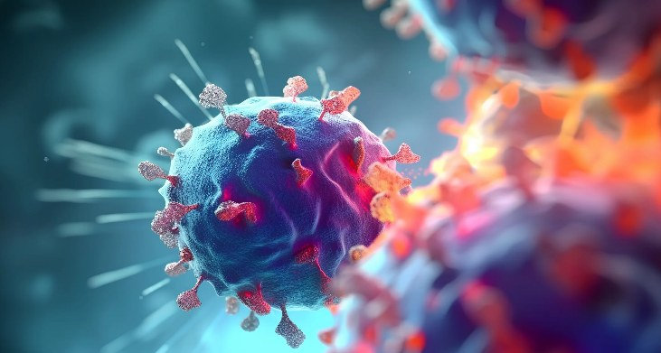

Das Lungenkrebszentrum Baden–Zürich bietet mit kantonsübergreifenden Kompetenzen individuelle, umfassende und wohnortnahe Behandlung und Begleitung von Patientinnen und Patienten.
Mehr erfahrenGemeinsames Lungenkrebszentrum – Ein Zentrum, zwei Standorte.
Die Diagnose und Behandlung von Lungenkrebs erfordern höchste fachliche Expertise und eine enge Zusammenarbeit verschiedener Spezialdisziplinen.
Das gemeinsame Lungenkrebszentrum des Stadtspital Zürich Triemli und des Kantonsspital Baden vereint diese Kompetenz in einem kantonsübergreifenden Zentrum an zwei Standorten.
Die Behandlung erfolgt wohnortnah an Ihrem jeweiligen Standort, eingebettet in die Strukturen und die gemeinsame Expertise eines standortübergreifenden Zentrums.
Unsere Spezialistinnen und Spezialisten arbeiten eng zusammen, damit jede Patientin und jeder Patient von der gesamten Expertise beider Häuser profitiert.
Wir begleiten Sie persönlich, kompetent und umfassend – von der ersten Abklärung über die individuelle Therapie bis zur Nachsorge.

Je genauer wir den Tumor kennen, desto gezielter kann die Behandlung auf Ihre persönliche Situation abgestimmt werden. Deshalb bildet eine sorgfältige Diagnostik die Grundlage für die Wahl der bestmöglichen Therapie.
Abhängig von Ihrer persönlichen Situation können verschiedene Untersuchungsverfahren zum Einsatz kommen. Bildgebende Verfahren wie die Computertomographie (CT), die Positronen-Emissions-Tomographie (PET/CT) oder die Magnetresonanztomographie (MRT) liefern detaillierte Informationen über den Tumor und zeigen, ob sich die Erkrankung auf andere Organe ausgebreitet hat. Ergänzend können weitere Untersuchungen, wie eine Bronchoskopie mit Gewebeentnahme, ein endobronchialer Ultraschall (EBUS) oder eine CT- oder ultraschallgesteuerte Biopsie erforderlich sein. Häufig wird die Diagnostik zudem durch eine Lungenfunktionsuntersuchung ergänzt.
Die entnommenen Gewebeproben werden in der Pathologie umfassend untersucht. Neben der feingeweblichen Analyse, erfolgen auch molekularpathologische Untersuchungen. Diese ermöglichen es, den Tumor noch genauer zu charakterisieren und moderne, individuell abgestimmte Therapien auszuwählen.
Wir begleiten Sie während der gesamten Diagnostik und besprechen die Untersuchungsergebnisse verständlich und nachvollziehbar mit Ihnen.

Unsere Tumorkonferenzen finden in unserem Zentrum wöchentlich statt. Dabei handelt es sich um eine Expertenkommission aller behandelnden Kolleginnen und Kollegen aus Pneumologie, Thoraxchirurgie, Onkologie, Strahlentherapie und Pathologie. Ergebnis der Konferenzen ist eine Therapie-Empfehlung, die wir im Anschluss gemeinsam mit Ihnen besprechen und Ihnen jeden Schritt genau erklären.
Interdisziplinäre Tumorkonferenz
Grundsätzlich stehen drei Therapieformen zur Verfügung, die einzeln, aber auch miteinander kombiniert angewendet werden können:
Darüber hinaus gibt es weitere Behandlungsmöglichkeiten wie eine Immuntherapie. Da eine Krebserkrankung nicht nur komplex, sondern auch individuell ist, kann es vorkommen, dass wir die Behandlungs-Empfehlung im Laufe der Therapie nochmals anpassen.
Gemeinsam für die beste Behandlung von Menschen mit Lungenkrebs.
Das Lungenkrebszentrum Baden–Zürich verbindet die Expertise des Kantonsspitals Baden und des Stadtspitals Zürich Triemli zu einem gemeinsamen Zentrum. Unser Ziel ist eine persönliche, wohnortnahe und wissenschaftlich fundierte Versorgung auf höchstem Niveau.
Jeder Mensch ist einzigartig und jede Erkrankung verläuft individuell. Deshalb richten wir Diagnostik, Therapie und Begleitung konsequent an den individuellen Bedürfnissen, Wünschen und Lebenszielen unserer Patientinnen und Patienten aus. Wir begegnen ihnen und ihren Angehörigen mit Respekt, Wertschätzung, Empathie und Offenheit.
Die Behandlung von Tumorerkrankungen, insbesondere Lungenkrebs, erfordert die enge Zusammenarbeit vieler Fachdisziplinen. Über beide Standorte hinweg verstehen wir uns als ein gemeinsames Team und legen Wert auf eine offene, transparente und vertrauensvolle Zusammenarbeit, auch mit Hausärztinnen, Hausärzten und zuweisenden Fachpersonen.
Wir verpflichten uns zu höchsten Qualitätsstandards. Durch strukturierte Tumorkonferenzen, kontinuierliche Fort- und Weiterbildung, sorgfältige Dokumentation sowie die regelmässige Überprüfung unserer Ergebnisse entwickeln wir unsere Versorgung laufend weiter. Unsere Patientinnen und Patienten profitieren von der gesamten Expertise beider Standorte.
Wir gestalten die Zukunft der Krebsmedizin aktiv mit. Durch klinische Studien, Forschung und Lehre ermöglichen wir den Zugang zu innovativen diagnostischen und therapeutischen Verfahren und tragen dazu bei, die Behandlung von Lungenkrebs kontinuierlich weiterzuentwickeln.
Dieses Leitbild gilt für alle Mitarbeitenden des standortübergreifenden Lungenkrebszentrums Baden–Zürich und bildet die Grundlage unseres täglichen Handelns.
An unserem Lungenkrebszentrum Baden–Zürich haben die Patientinnen und Patienten die Möglichkeit, an ausgewählten onkologischen Studien teilzunehmen.
Nähere Informationen finden Sie unter:
